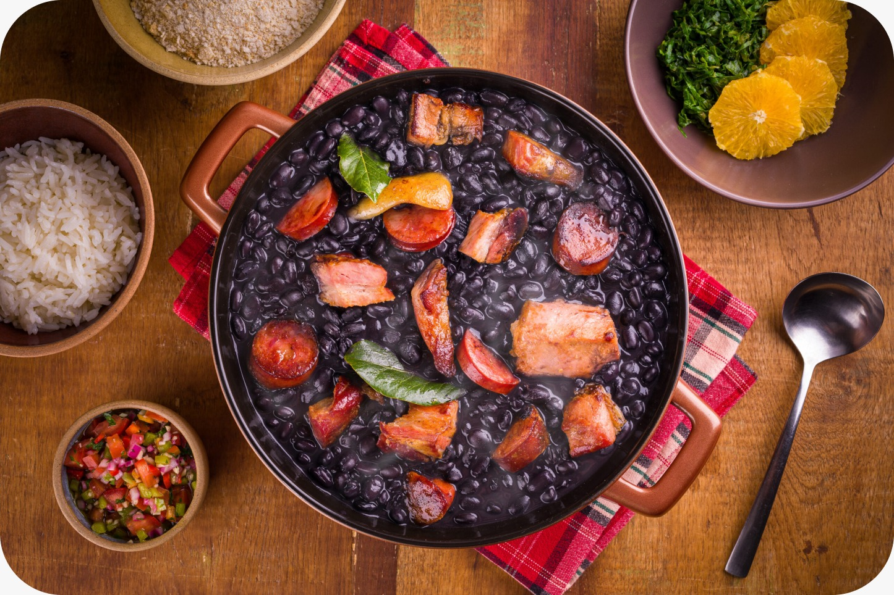
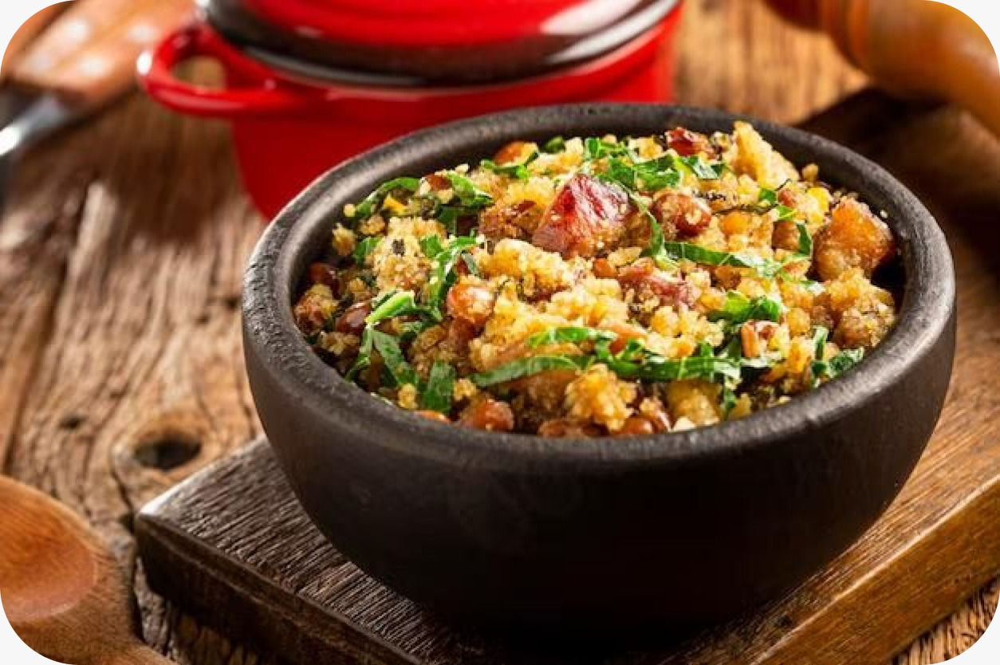

Sabores que Contam Histórias
Cada prato brasileiro carrega consigo séculos de história, influências africanas, indígenas e europeias. A cozinha é palco da identidade cultural — do tempero do acarajé à feijoada das rodas de samba, da simplicidade das panelas de barro à arte nas mãos de quem cozinha.

Acarajé
Mais do que um quitute, o acarajé é um símbolo da resistência e da fé afro-brasileira, preparado com axé e tradição.

Feijoada
Um prato que nasceu nas senzalas e ganhou o coração do Brasil, reunindo famílias em volta da mesa e da música.

Sabores do Brasil
Da Bahia ao Sul, a culinária brasileira é poesia em forma de aroma, cor e sabor — um reflexo da alma de cada região.
“Cozinhar é pintar memórias com temperos, é escrever histórias em cada refeição.”